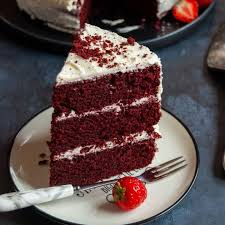

Red Velvet Cake
Ingredients for the Cake
- 3 cups of Cake Flour
- 1 teaspoon of Baking Soda
- 2 tablespoons of Unsweetened Coco Powder
- 1/2 teaspoon of Salt
- 1/2 cup of Butter
- 2 cups of Sugar
- 1 cup of Oil
- 4 Large Eggs
- 1 tablespoon of Pure Vanilla Extract
- 1 Teaspoon of Distilled White Vinegar
- 1 gel of Red Food Coloring
- 1 cup of Buttermilk
Ingredients for the Cream Cheese Frosting
- 6 ounces of Brick Cream Cheese, softened to room temperature
- 3/4 cups of Butter
- 5 cups of Confectioners Sugar
- A Splash of Milk
- 1 and 1/2 teaspoon of Vanilla Extract
- A Pinch of Salt
Steps to Prepare and Make Cake
- Preheat oven to 350°F (177°C)
- Grease two 9-inch cake pans, line with parchment paper rounds, then grease the parchment paper.
- Make the cake: Whisk the flour, baking soda, cocoa powder, and salt together in a large bowl. Set aside.
- Using a mixer fitted with a paddle attachment, beat the butter and sugar together on medium-high speed until combined, about 1 minute.
- Scrape down the sides and up the bottom of the bowl with a rubber spatula as needed. Add the oil, egg yolks, vanilla extract, and vinegar and beat on high for 2 minutes. (Set the egg whites aside.)
- Scrape down the sides and up the bottom of the bowl with a silicone spatula as needed.
- With the mixer on low speed, add the dry ingredients in 2-3 additions alternating with the buttermilk. Beat in your desired amount of food coloring just until combined.
- Vigorously whisk or beat the 4 egg whites on high speed until fluffy peaks form for 3 mins.
- Divide batter between cake pans. Bake for 30-32 minutes or until the tops of the cakes spring back when gently touched and a toothpick inserted in the center comes out clean.
- Remove cakes from the oven and cool completely in the pans set on a wire rack. The cakes must be completely cool before frosting and assembling.
- Make the frosting: In a large bowl using a mixer fitted with a whisk or paddle attachment, beat the cream cheese and butter together on medium-high speed until smooth, about 2 minutes.
- Add the confectioners sugar, vanilla extract, and a pinch of salt.
- Beat on low speed for 30 seconds, then increase to high speed and beat for 3 minutes until completely combined and creamy.
- Assemble and frost: Using a large serrated knife, slice a thin layer off the tops of the cakes to create a flat surface.
- Evenly cover the top with frosting and repeat process for layers.
- Refrigerate cake for at least 30-60 minutes before slicing. This helps the cake hold its shape when cutting.
- Cover leftover cake tightly and store in the refrigerator for 5 days. Frosted cake or unfrosted cake layers can be frozen up to 2-3 months.
- Thaw overnight in the refrigerator and bring to room temperature before decorating/serving.
- Enjoy!
Optional Toppings or Variations
- Cherries--For extra flavor on top of cake.
- Sprinkles
